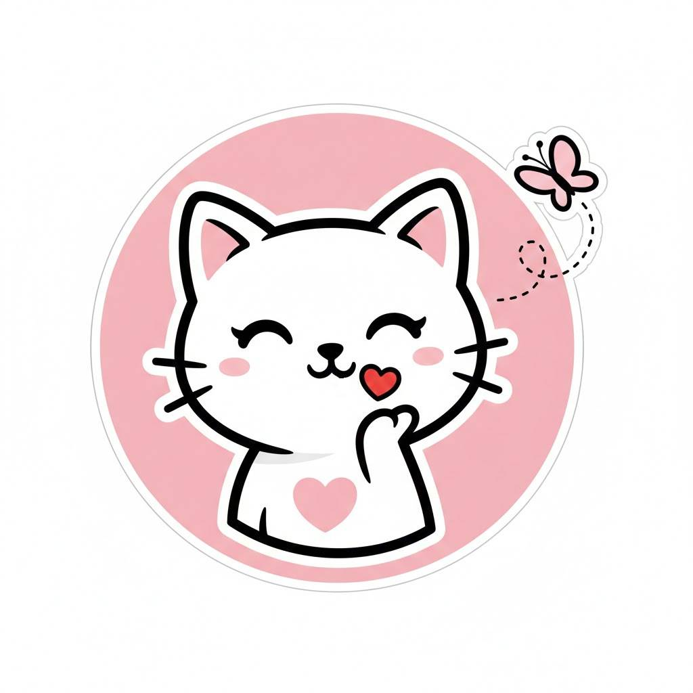
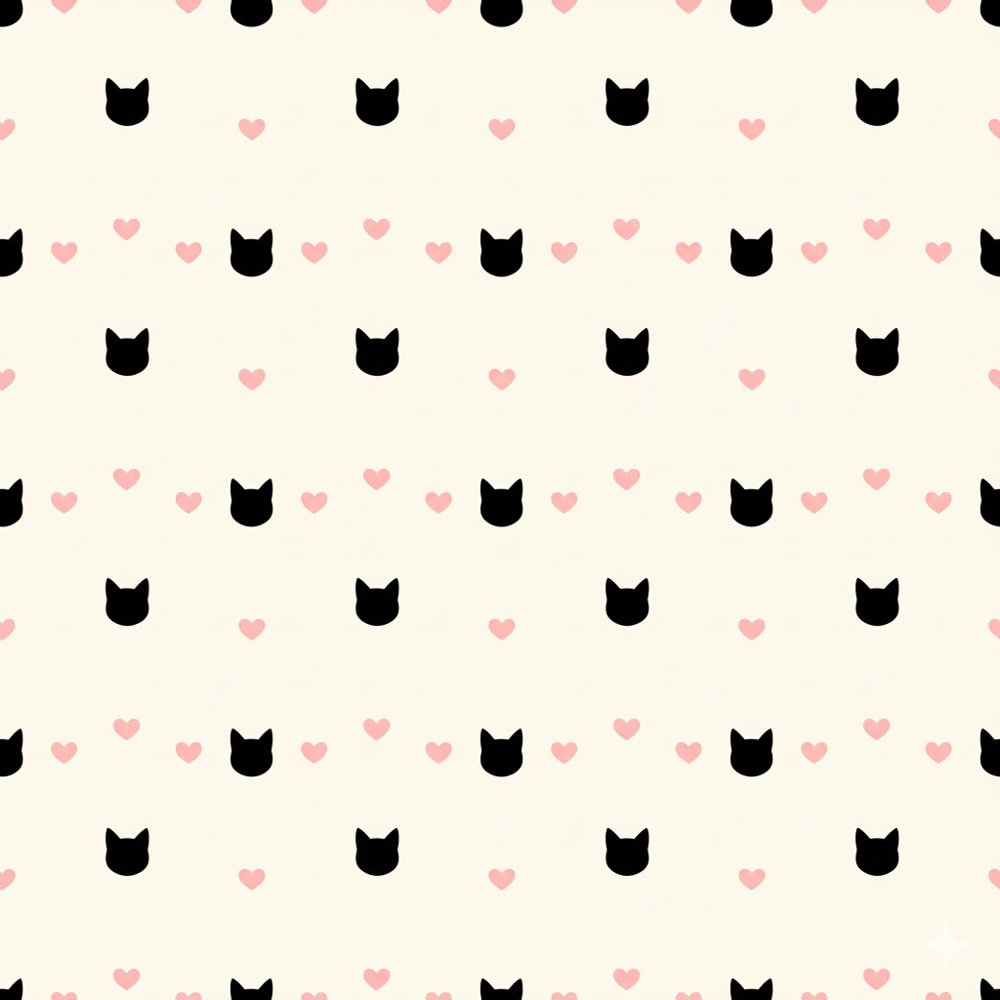

Mehr als nur Merch – ein Lifestyle 🎀
Gegründet in Wien, bringen wir die süßeste Ästhetik direkt zu dir nach Hause.

Klasse 25, 28, 35
Unsere Wort-Bildmarke
Der verspielte Schriftzug mit der rosa Schleife symbolisiert unsere Liebe zum Detail und den „Cute Aesthetic“-Lifestyle. Er dient als offizielles Siegel für die Originalität all unserer Produkte.

Klasse 25, 28, 35
Unsere Bildmarke
Die klare Katzen-Silhouette steht für unser modernes Design. Sie ist unser dezenten Erkennungsmerkmal auf Stickereien und kleineren Accessoires.

Klasse 24, 25
Unsere Mustermarke
Unser sich wiederholendes Muster aus Kätzchen und Herzen repräsentiert die Unendlichkeit unserer Community. Es sorgt für einen harmonischen Look auf Stoffen und Verpackungen.